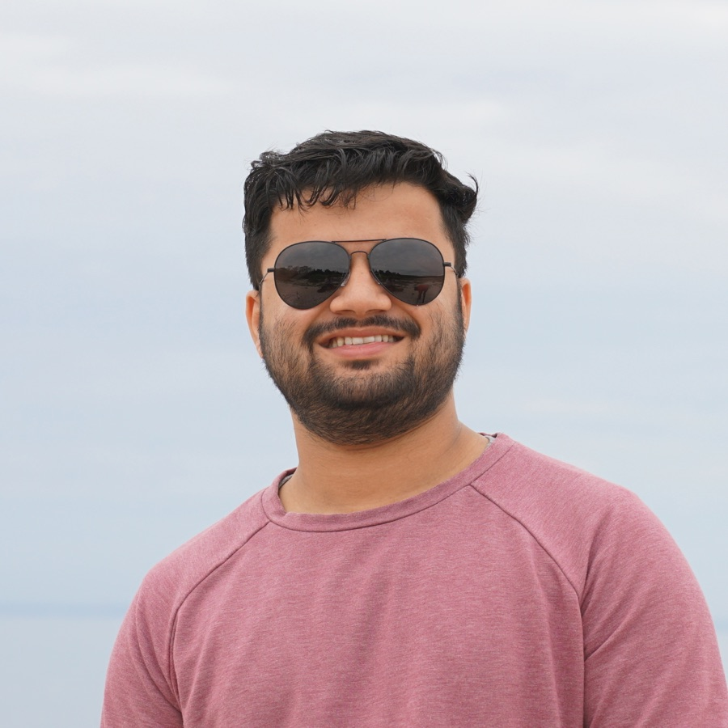

PhD student · Stony Brook University
Paras Sharma
I work with Prof. Simon Birrer on strong gravitational lensing, where a massive galaxy bends the light of a more distant source into arcs, rings and multiple images. I study how these lenses can constrain dark energy and probe the accretion disks of quasars, and I help develop SLSim, which simulates the lenses that surveys such as Rubin LSST, Euclid and Roman will find.
Ray-traced live
A lens with two sources
One galaxy bends the light of two more distant ones into rings, as a deep telescope image would show it. The nearer source makes the smaller ring, the farther one the larger: comparing the two is the idea behind strong lensing tomography.
Drag the image to move off the line of sight: the rings break into arcs, and the three galaxies separate in 3D.
Every galaxy here, the lens, both sources and the field behind them, is a real one from the Hubble Ultra Deep Field; only their arrangement is simulated, with distances along the line of sight compressed. Images: NASA, ESA, S. Beckwith (STScI) and the HUDF Team, CC BY 4.0.